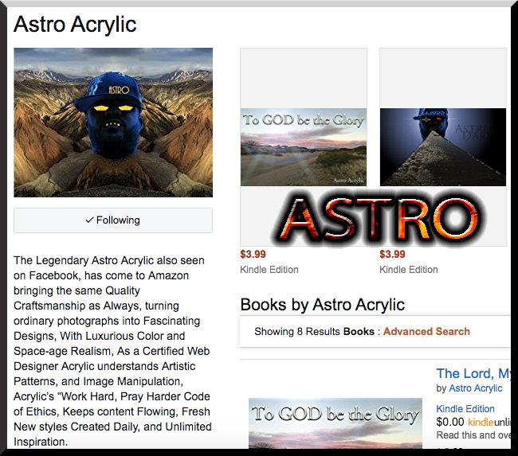

DorseyDevelopment
Home
About
Services
All Tech All the Time.
Why not?...
Subscribe To Our Newsletter
Subscribe
JQuery Plugins

Books by Astro Acrylic
AstroElement (Kindle Edition)
AstroDark (Kindle Edition)
CodeEdge (Kindle Edition)
AstroVortex (Kindle Edition)
CheesyDigital (Kindle Edition)
Astro Vision: Acrylic Styles
AstroVortex (Kindle Edition)
Astro Vision: Eyesight Through Acrylic
1.Opening Keynote - GitHub Universe 2016
2.How we build software.
3.Introducing New Workflow Improvements.
4.Git Merge 2016
5.Making Electron Development Simpler, More Pleasant, and More Productive.
6.GitHub Universe - We Have Wift Off!
7.Anna's Story
Latest News
Podcast Links
March 2015 [UbuntuPodcast]
April 2015 [UbuntuPodcast]
May 2015 [UbuntuPodcast]
June 2015 [UbuntuPodcast]
July 2015 [UbuntuPodcast]
August 2015 [UbuntuPodcast]
September 2015 [UbuntuPodcast]
October 2015 [UbuntuPodcast]
Youtube Video Links
1.Opening Keynote - GitHub Universe 2016
2.How we build software.
3.Introducing New Workflow Improvements.
4.Git Merge 2016
5.Making Electron Development Simpler, More Pleasant, and More Productive.
6.GitHub Universe - We Have Wift Off!
7.Anna's Story